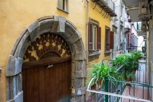

Museo Cappella Sansevero
La cappella che custodisce il Cristo Velato, capolavoro del Settecento, praticamente sotto casa.
Via Francesco de Sanctis è la strada della Cappella Sansevero, nel cuore del centro storico patrimonio UNESCO. Da qui si raggiungono a piedi chiese, botteghe, pizzerie storiche e i luoghi più amati della città.

La cappella che custodisce il Cristo Velato, capolavoro del Settecento, praticamente sotto casa.
La strada dei presepi e delle botteghe artigiane, viva in ogni stagione dell'anno.
Il castello simbolo della città, affacciato sul porto e su Piazza Municipio.
Gallerie e cisterne scavate nel tufo sotto la città, da visitare con una guida.
Il castello sul mare di Santa Lucia, punto di partenza per una passeggiata sul lungomare.
Nel Rione Sanità, uno dei luoghi più antichi e suggestivi di Napoli.